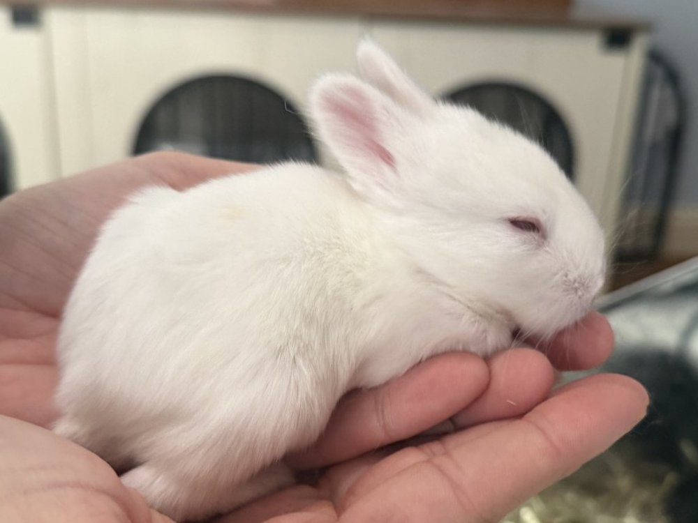

1White A ruby-eyed white
All white, pink ears, eyes closed the whole time it was handled. The sleepier of the two whites. Tell them apart by temperament until they grow into their faces.
Photo
IMG_9748 · also in IMG_9750 (with Kit 3)